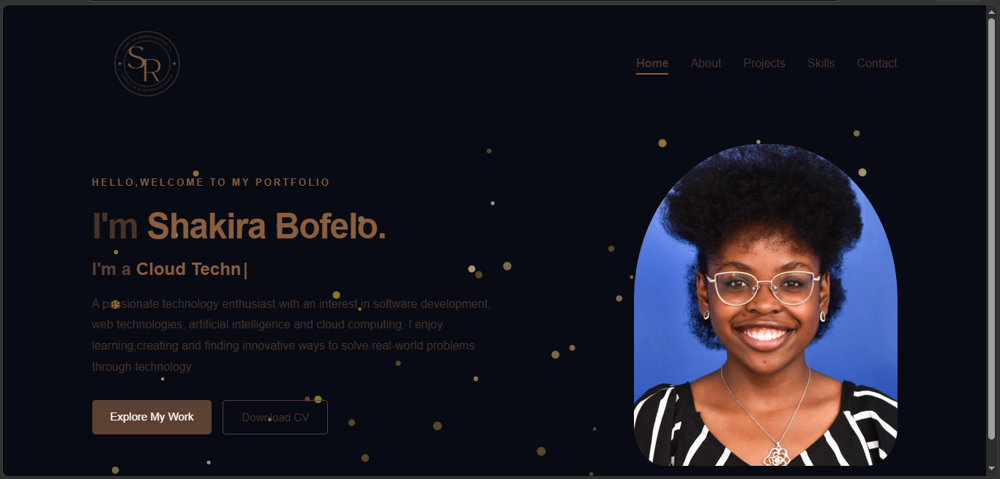

My Projects
Explore some of my work, skills and projects that reflect my journey in technology and development.
Featured Project

Personal Portfolio Website
A personal portfolio website designed and developed to showcase my technical skills, experience and journey in technology.
Technologies Used
Key Features
- Responsive design for different screen sizes
- Interactive navigation menu
- Custom UI/UX design
- Animated content cards
- Consistent dark and gold colour theme